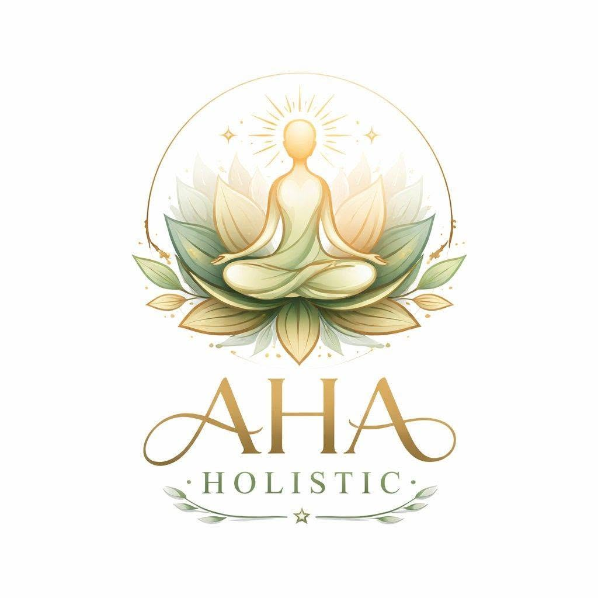

Breathwork-cirklar
Guidade gruppsessioner med aktiv andning, musik, närvaro och tid för integration.

AHA HolisticRETREATS & UPPLEVELSER
Vi skapar cirklar, workshops och retreats där breathwork, yoga, rörelse, natur och gemenskap får mötas.
VÅRA UPPLEVELSER
Våra upplevelser formas med omsorg och kan innehålla guidande breathwork, yoga, meditation, frigörande dans, delning, integration och tid i naturen.
Vi vill skapa en balans mellan kraft och mjukhet, mellan det individuella och det gemensamma.
Fråga om kommande datumGuidade gruppsessioner med aktiv andning, musik, närvaro och tid för integration.
Praktiker som hjälper kroppen att mjukna, uttrycka sig och hitta tillbaka till sin rytm.
Fördjupande dagar eller helger med natur, gemenskap, vila och transformerande upplevelser.
TRYGGHET & SÄKERHET
Inför mer intensiva breathwork-sessioner får deltagare information om kontraindikationer och möjlighet att ställa frågor. Du kan inte delta i intensiv breathwork om du är gravid eller har epilepsi. Vid hjärtsjukdom, högt blodtryck eller annan medicinsk osäkerhet ska läkare rådfrågas innan deltagande.
All medverkan är frivillig och du kan när som helst pausa eller avbryta.